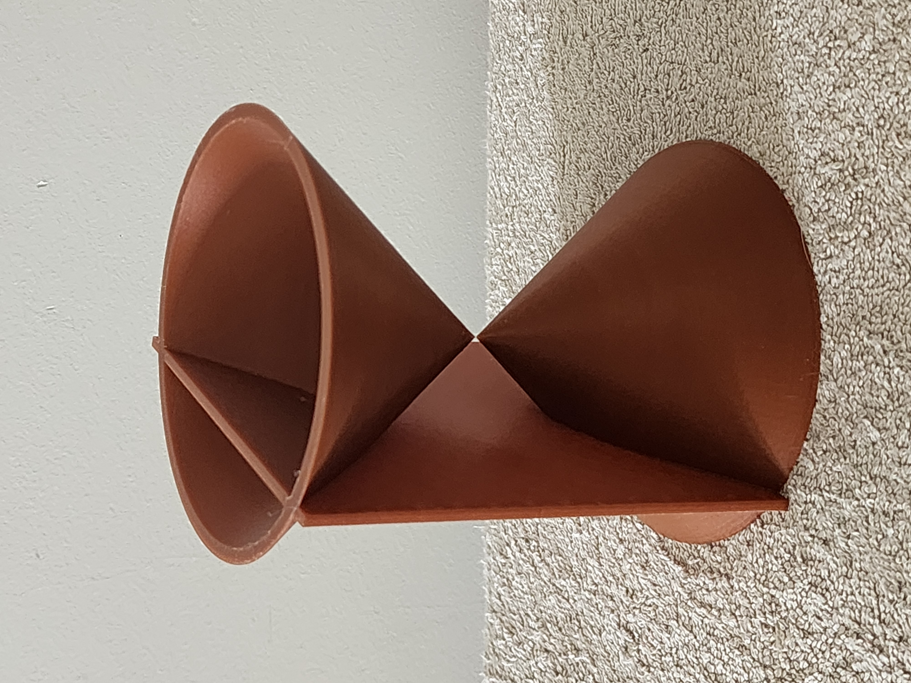
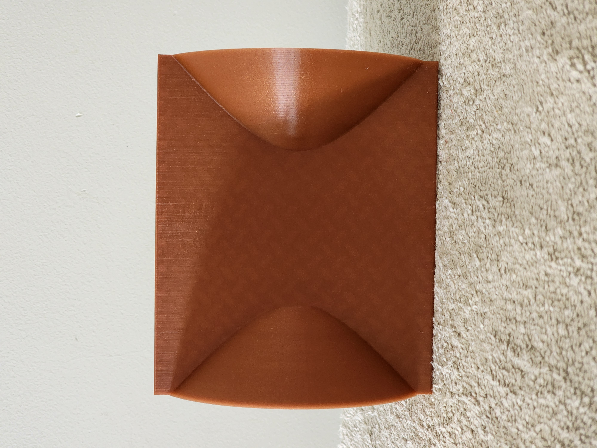
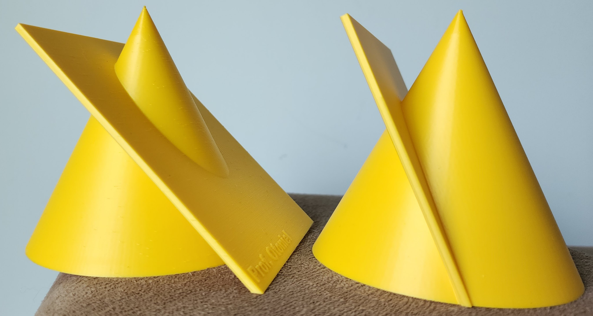

Modelagem e Impressão 3D - Cônicas e Quádricas

Cônica: Hipérbole (interseção da superfície cônica com um plano que passa pelas duas folhas)


Cônica: Elipse e parábola (interseção de um cone com um plano)